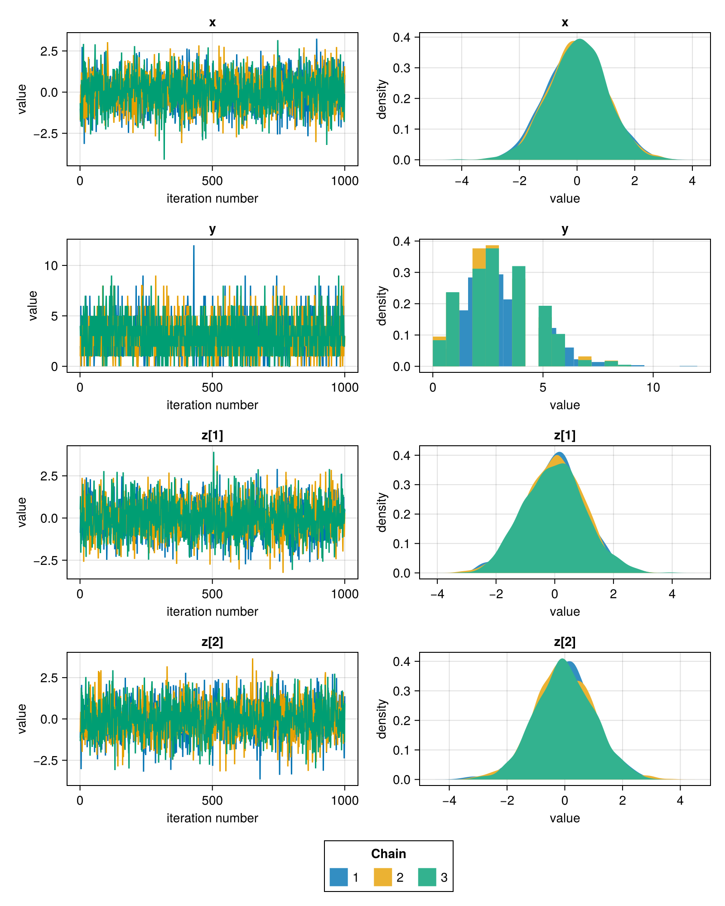
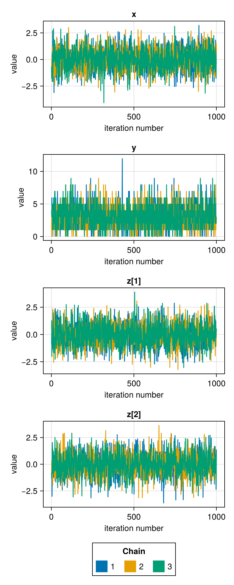
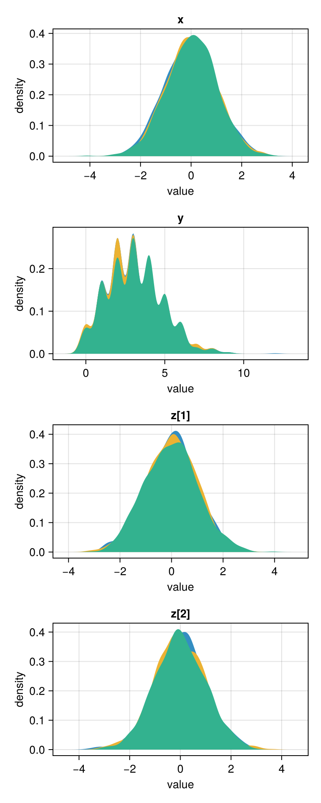
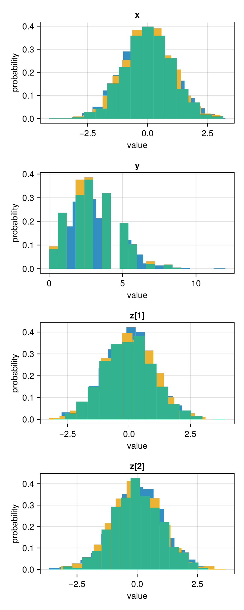
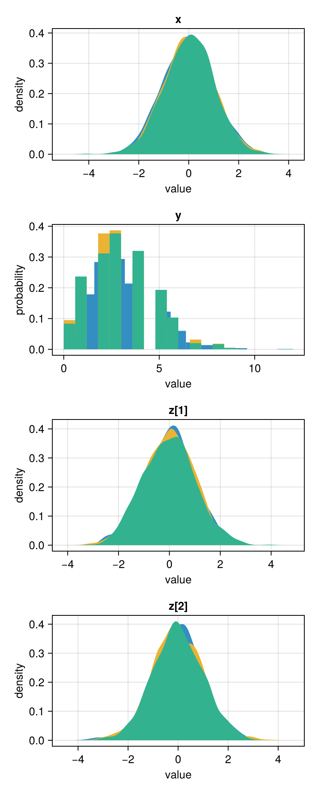
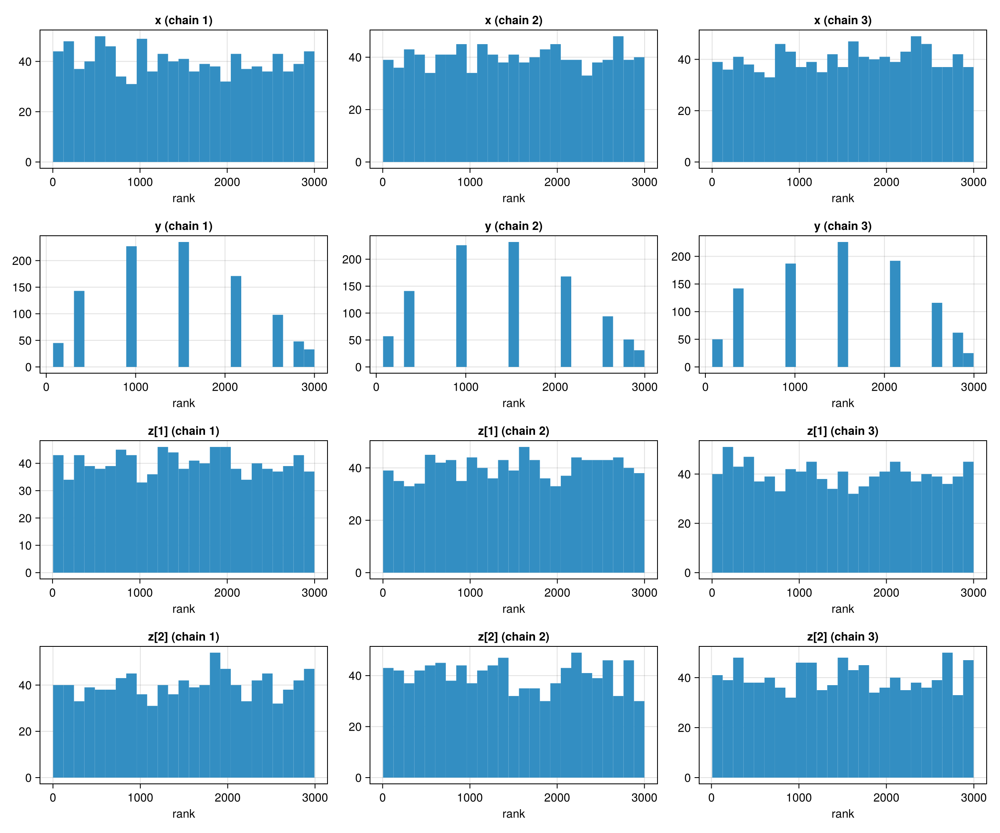
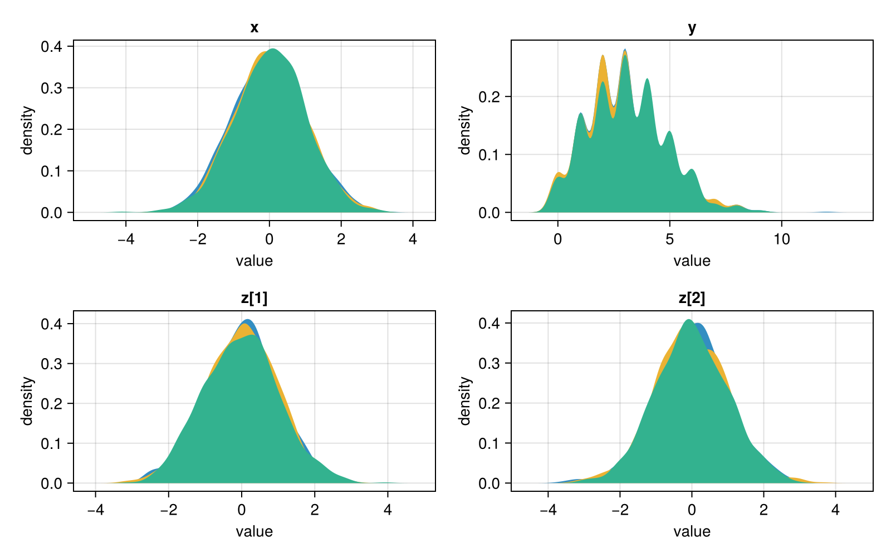
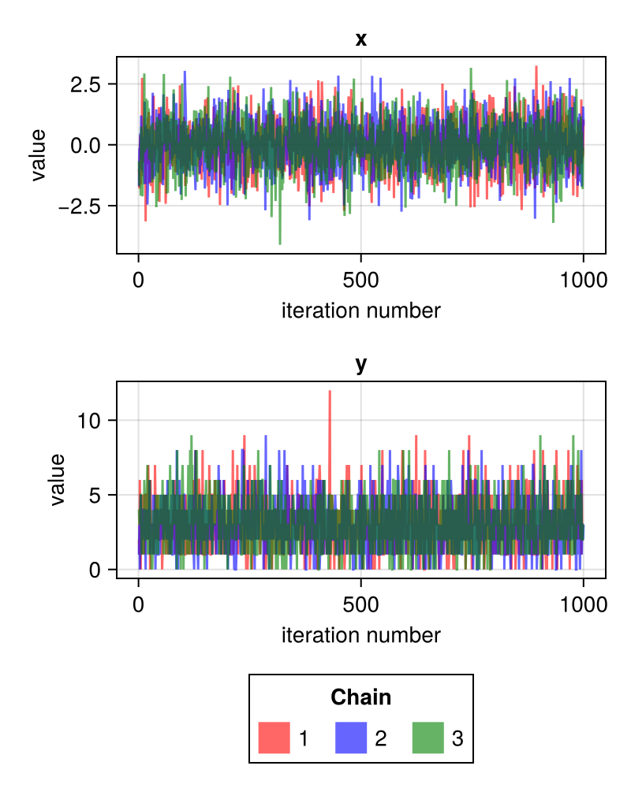
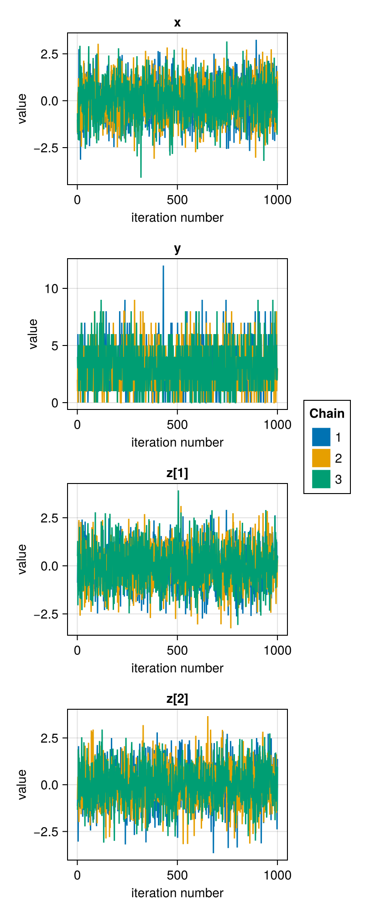

Plotting: Makie.jl
Plotting functionality with Makie.jl is currently in a very early stage of development, so there are fewer plots. However, there is some custom code to generate (e.g.) shared legends, which leads to perhaps slightly nicer plots than for Plots.jl. Many parts of the Makie integration in FlexiChains are heavily lifted from the (unreleased) ChainsMakie.jl package.
You can also use Makie as a backend to make pair plots! This requires loading a Makie backend as well as PairPlots.jl. Please see the PairPlots.jl integration section for more details.
General interface
For all functions plotfunc shown in the table of the plotting page, you can use the following invocation:
Generate an entire
Makie.Figure. This automatically generates a complete plot for you, including a legend.plotfunc( chn[, param_or_params]; figure=(;), axis=(;), legend=(;), legend_position=:bottom, kwargs... )param_or_paramscan be anything used to index into a chain (single parameters are also accepted). If not specified, all parameters in the chain will be plotted.Most keyword arguments are passed to the underlying Makie plotting functions, but there are some special ones which are handled by FlexiChains. For more information about these, see the customisation section below.
For functions which create only a single plot per parameter (e.g. density, or mtraceplot), the following options are also available. The intention is to allow you to build more complex figures using these as building blocks:
Plot a single parameter onto an existing
Makie.Axisobject: this uses the 'mutating' version with an exclamation mark.If
axis not specified, uses the current axis. Colours are handled the same way as above.parammust be a single parameter.plotfunc!([ax, ]chn, param; kwargs...)Plot a single parameter onto a Makie grid position. This constructs a
Makie.Axisfor you, and as before you can pass options via theaxiskeyword argument. Colours are handled the same way as above.parammust be a single parameter.f = Figure() gp = f[1, 1] plotfunc!(gp, chn, param; axis=(;), kwargs...)
Setup
Here, we create a model with different types of parameters (continuous, discrete, and vector-valued). This is the same model as used on the Plots.jl documentation page.
using FlexiChains, CairoMakie, Turing
@model function f()
x ~ Normal()
y ~ Poisson(3)
z ~ MvNormal(zeros(2), I)
end
chn = sample(
f(), MH(), MCMCThreads(), 1000, 3;
discard_initial=100, chain_type=VNChain, progress=false
)FlexiChain (1000 iterations, 3 chains)
↓ iter=101:1100 | → chain=1:3
Parameter type VarName
Parameters x, y, z
Extra keys :accepted, :logprior, :loglikelihood, :logjoint
Default plot
Calling Makie.plot(chn) produces a trace plot and mixed density side-by-side for each parameter.
Makie.plot — Function
Makie.plot(
chn::FC.FlexiChain,
param_or_params = FC.Parameter.(FC.parameters(chn));
kwargs...,
)Plot the parameters in a FlexiChain using Makie. For each parameter, a trace plot and a density plot are created.
If no parameters are specified, this will plot all parameters in the chain. Note that non-parameter, i.e. Extra, keys are excluded by default. If you want to plot all keys, you can explicitly pass all keys with Makie.plot(chn, :).
Keyword arguments
pool_chains::Bool: whether to pool data from all chains into a single plot, or to plot each chain separately. Defaults tofalse.figure::NamedTuple: Additional keyword arguments passed to theMakie.Figureconstructor.axis::NamedTuple: Additional keyword arguments passed to theMakie.Axisconstructor for each subplot.legend::NamedTuple: Additional keyword arguments passed to theMakie.Legendconstructor, if the legend is added.legend_position::Symbol: Position of the legend. This can be either:right,:bottomor:nonefor no legend.layout: eithernothing(the default), or a tuple of(nrows, ncols)specifying the grid layout for the subplots.
Extra keyword arguments are passed to Makie's plotting functions, which allow you to customise the appearance of the plot.
Makie.plot(chn)
Trace plots
FlexiChains.mtraceplot — Function
FlexiChains.mtraceplot(
chn::FC.FlexiChain[, param_or_params];
kwargs...,
)Create trace plots for the specified parameters in the chain.
If no parameters are specified, this will plot all parameters in the chain. Note that non-parameter, i.e. Extra, keys are excluded by default. If you want to plot all keys, you can explicitly pass all keys with FlexiChains.mtraceplot(chn, :).
Keyword arguments
figure::NamedTuple: Additional keyword arguments passed to theMakie.Figureconstructor.axis::NamedTuple: Additional keyword arguments passed to theMakie.Axisconstructor for each subplot.legend::NamedTuple: Additional keyword arguments passed to theMakie.Legendconstructor, if the legend is added.legend_position::Symbol: Position of the legend. This can be either:right,:bottomor:nonefor no legend.layout: eithernothing(the default), or a tuple of(nrows, ncols)specifying the grid layout for the subplots.
Extra keyword arguments are passed to Makie's plotting functions, which allow you to customise the appearance of the plot.
FlexiChains.mtraceplot(chn)
Density plots
Makie.density — Function
Makie.density(
chn::FC.FlexiChain[, param_or_params];
pool_chains::Bool=false,
kwargs...,
)Create density plots for the specified parameters in the chain.
If no parameters are specified, this will plot all parameters in the chain. Note that non-parameter, i.e. Extra, keys are excluded by default. If you want to plot all keys, you can explicitly pass all keys with Makie.density(chn, :).
Keyword arguments
pool_chains::Bool: whether to pool data from all chains into a single plot, or to plot each chain separately. Defaults tofalse.figure::NamedTuple: Additional keyword arguments passed to theMakie.Figureconstructor.axis::NamedTuple: Additional keyword arguments passed to theMakie.Axisconstructor for each subplot.legend::NamedTuple: Additional keyword arguments passed to theMakie.Legendconstructor, if the legend is added.legend_position::Symbol: Position of the legend. This can be either:right,:bottomor:nonefor no legend.layout: eithernothing(the default), or a tuple of(nrows, ncols)specifying the grid layout for the subplots.
Extra keyword arguments are passed to Makie's plotting functions, which allow you to customise the appearance of the plot.
Makie.density(chn)
Histograms
Makie.hist — Function
Makie.hist(
chn::FC.FlexiChain[, param_or_params];
pool_chains::Bool=false,
kwargs...,
)Create histograms for the specified parameters in the chain.
If no parameters are specified, this will plot all parameters in the chain. Note that non-parameter, i.e. Extra, keys are excluded by default. If you want to plot all keys, you can explicitly pass all keys with Makie.hist(chn, :).
Keyword arguments
pool_chains::Bool: whether to pool data from all chains into a single plot, or to plot each chain separately. Defaults tofalse.figure::NamedTuple: Additional keyword arguments passed to theMakie.Figureconstructor.axis::NamedTuple: Additional keyword arguments passed to theMakie.Axisconstructor for each subplot.legend::NamedTuple: Additional keyword arguments passed to theMakie.Legendconstructor, if the legend is added.legend_position::Symbol: Position of the legend. This can be either:right,:bottomor:nonefor no legend.layout: eithernothing(the default), or a tuple of(nrows, ncols)specifying the grid layout for the subplots.
Extra keyword arguments are passed to Makie's plotting functions, which allow you to customise the appearance of the plot.
Makie.stephist — Function
Makie.stephist(
chn::FC.FlexiChain[, param_or_params];
pool_chains::Bool=false,
kwargs...,
)Create a step histogram for the specified parameters in the chain.
If no parameters are specified, this will plot all parameters in the chain. Note that non-parameter, i.e. Extra, keys are excluded by default. If you want to plot all keys, you can explicitly pass all keys with Makie.stephist(chn, :).
Keyword arguments
pool_chains::Bool: whether to pool data from all chains into a single plot, or to plot each chain separately. Defaults tofalse.figure::NamedTuple: Additional keyword arguments passed to theMakie.Figureconstructor.axis::NamedTuple: Additional keyword arguments passed to theMakie.Axisconstructor for each subplot.legend::NamedTuple: Additional keyword arguments passed to theMakie.Legendconstructor, if the legend is added.legend_position::Symbol: Position of the legend. This can be either:right,:bottomor:nonefor no legend.layout: eithernothing(the default), or a tuple of(nrows, ncols)specifying the grid layout for the subplots.
Extra keyword arguments are passed to Makie's plotting functions, which allow you to customise the appearance of the plot.
Makie.hist(chn)
Mixed density plots
FlexiChains.mmixeddensity — Function
FlexiChains.mmixeddensity(
chn::FC.FlexiChain[, param_or_params];
pool_chains::Bool=false,
kwargs...,
)Create mixed density plots (i.e., density plots for continuous parameters and histograms for discrete parameters) for the specified parameters in the chain.
If no parameters are specified, this will plot all parameters in the chain. Note that non-parameter, i.e. Extra, keys are excluded by default. If you want to plot all keys, you can explicitly pass all keys with FlexiChains.mmixeddensity(chn, :).
Keyword arguments
pool_chains::Bool: whether to pool data from all chains into a single plot, or to plot each chain separately. Defaults tofalse.figure::NamedTuple: Additional keyword arguments passed to theMakie.Figureconstructor.axis::NamedTuple: Additional keyword arguments passed to theMakie.Axisconstructor for each subplot.legend::NamedTuple: Additional keyword arguments passed to theMakie.Legendconstructor, if the legend is added.legend_position::Symbol: Position of the legend. This can be either:right,:bottomor:nonefor no legend.layout: eithernothing(the default), or a tuple of(nrows, ncols)specifying the grid layout for the subplots.
Extra keyword arguments are passed to Makie's plotting functions, which allow you to customise the appearance of the plot.
FlexiChains.mmixeddensity(chn)
Rank plots
FlexiChains.mrankplot — Function
FlexiChains.mrankplot(
chn::FC.FlexiChain[, param_or_params];
overlay::Bool=false,
kwargs...,
)Create rank plots for the specified parameters in the chain.
If no parameters are specified, this will plot all parameters in the chain. Note that non-parameter, i.e. Extra, keys are excluded by default. If you want to plot all keys, you can explicitly pass all keys with FlexiChains.mrankplot(chn, :).
Keyword arguments
overlay::Bool: whether to overlay the histograms for all chains on the same axis, or to plot each chain separately. Defaults tofalse.figure::NamedTuple: Additional keyword arguments passed to theMakie.Figureconstructor.axis::NamedTuple: Additional keyword arguments passed to theMakie.Axisconstructor for each subplot.legend::NamedTuple: Additional keyword arguments passed to theMakie.Legendconstructor, if the legend is added.legend_position::Symbol: Position of the legend. This can be either:right,:bottomor:nonefor no legend.layout: eithernothing(the default), or a tuple of(nrows, ncols)specifying the grid layout for the subplots.
Extra keyword arguments are passed to Makie's plotting functions, which allow you to customise the appearance of the plot.
FlexiChains.mrankplot(chn)
Customisation
As described in the general interface section above, all of the above functions accept keyword arguments to control the appearance of the plot.
The figure, axis, and legend arguments (which can be, e.g., NamedTuples) allow you to pass extra keyword arguments to the Figure, Axis, and Legend constructors. Then, most other keyword arguments are forwarded to the underlying Makie plotting functions; please refer to the Makie documentation for more details on these.
Finally, there are also some special keyword arguments which are handled by FlexiChains. Here are some examples of these in action.
Custom layout
By default, plots are arranged with one parameter per row. You can pass a tuple of (nrows, ncols) as the layout keyword argument to change this:
Makie.density(chn; layout=(2, 2))
Custom colours
Pass a vector of colours (one per chain) via the color keyword, or a categorical colormap via colormap:
FlexiChains.mtraceplot(chn, [@varname(x), @varname(y)];
color=[(:red, 0.6), (:blue, 0.6), (:green, 0.6)],
# or e.g. colormap=:tab10
)
To get the best effects with colormap, you should pass a categorical colormap such as :tab10. Continuous colormaps like :viridis will give poor results since it will use the first n colours of the colormap, which are all very similar!
Legend position
Use legend_position to move the legend (:bottom, :right, or :none):
FlexiChains.mtraceplot(chn; legend_position=:right)